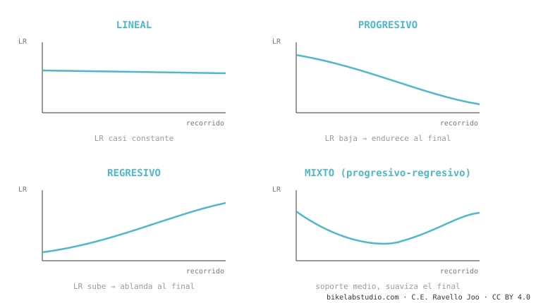

Cómo funciona la suspensión de tu bici, explicada fácil
La suspensión no existe para que vayas "cómodo": existe para mantener la rueda pegada al suelo. Todo lo demás —el leverage ratio, el anti-squat, la trayectoria del eje, los nombres raros como VPP o DW-link— son solo formas distintas de lograr esa única cosa. Aquí te lo explicamos de cero, en orden, sin marketing.
Vas a salir de esta página entendiendo por qué tu bici se siente como se siente — y por qué la de tu amigo, con el mismo recorrido, se siente completamente distinta. Empezamos por lo más simple y subimos paso a paso. No necesitas saber nada de antemano.
Primero: ¿para qué sirve de verdad la suspensión?
Imagina que vas corriendo y el suelo tiene un hueco. Si tu pie sigue rígido, tropiezas. Si tu rodilla se dobla a tiempo, el pie se queda en el suelo y sigues corriendo sin perder el paso.
Eso, exactamente, hace tu suspensión: deja que la rueda suba y baje siguiendo el terreno mientras tú y la bici seguís en línea recta. Una rueda pegada al suelo es una rueda que tiene agarre — para frenar, para girar, para traccionar. Cuando la rueda salta y se despega, pierdes control. Esa es la verdadera misión. Todo lo que viene ahora son las herramientas de ingeniería para conseguirlo mejor.
El concepto madreLeverage ratio: la palanca entre tu rueda y el amortiguador
¿Por qué una llave larga afloja un perno que tu mano sola no puede? Por palanca. Cuanto más largo el brazo, más se multiplica la fuerza.
Tu rueda trasera y el amortiguador están unidos por un sistema de barras que hace justo eso: multiplica. El leverage ratio (relación de palanca) responde una pregunta simple: ¿cuántos milímetros se mueve la rueda por cada milímetro que se comprime el amortiguador? Si la rueda baja 3 mm y el amortiguador se hunde 1 mm, eso es un leverage ratio de 3:1.

¿Y a ti qué te importa montando? Un número alto hace que la suspensión se sienta más suave y sensible, pero le exige más presión de aire o un muelle más duro para sostenerte. Y aquí está lo que casi nadie te cuenta: ese número no es fijo. Cambia a lo largo del recorrido. Y la forma en que cambia —no el promedio— es lo que de verdad decide cómo se siente tu bici.
→ Profundiza: qué es el leverage ratio y cómo se calcula La forma de la curvaProgresivo, lineal o regresivo: la "personalidad" de la suspensión
Si dibujamos el leverage ratio a lo largo del recorrido, sale una curva. Y esa curva tiene personalidad:

Por eso dos bicis con el mismo recorrido y hasta el mismo leverage ratio promedio pueden sentirse opuestas: lo que manda es la forma de la curva, no el promedio.
→ Profundiza: la curva de progresividad Lo que pasa al pedalearAnti-squat: por qué tu bici "bota" (o no) cuando pedaleas fuerte
¿Notaste que algunas bicis se mecen arriba y abajo cuando pedaleas fuerte sentado, y otras se quedan firmes? Eso no es el amortiguador. Es geometría.
Al pedalear pasan dos cosas: tu peso se va hacia atrás (tiende a hundir la suspensión) y la cadena tira del basculante. El anti-squat mide cuánto se cancelan esas fuerzas. Al 100% la suspensión se queda quieta al pedalear; por debajo, se hunde y "bota" (eso es el pedal bob); por encima, hasta se estira. Un anti-squat alto te hace eficiente subiendo — pero, como verás, tiene un precio.
→ Profundiza: qué es el anti-squat Lo que pasa al frenarAnti-rise: por qué la trasera se "endurece" en las frenadas
El primo del anti-squat, pero al frenar. Cuando aprietas el freno trasero, tu peso se va adelante y la trasera tiende a estirarse. El anti-rise mide cuánto contrarresta eso el diseño. Mucho anti-rise = la bici se mantiene plantada y estable al frenar, pero la suspensión se vuelve menos sensible justo cuando más baches pisas. Poco = más activa, pero la geometría se mueve más. Es un equilibrio, no un "mejor".
→ Profundiza: qué es el anti-rise Por dónde viaja la ruedaAxle path, chain growth y pedal kickback: el trío conectado
Cuando la rueda choca una raíz, ¿prefieres que se vaya hacia arriba (contra el golpe) o hacia atrás-arriba (esquivándolo)? Ahí entra la trayectoria del eje.
El axle path (trayectoria del eje) es el camino que dibuja la rueda al comprimirse. Si va hacia atrás, traga mucho mejor los golpes de canto vivo — por eso las bicis de high pivot "flotan". Pero ese camino atrás aleja la rueda del pedalier y estira la cadena (chain growth), que a su vez tira de los pedales hacia atrás: eso es el pedal kickback. Por eso las high-pivot llevan una polea (idler): para que la cadena no te patee los pies. Los tres conceptos son el mismo fenómeno visto desde tres ángulos.
→ Profundiza: axle path → chain growth y pedal kickback Por qué hay tantos nombresLos sistemas: monopivote, Horst, VPP, DW-link, Maestro, high-pivot…
Todos esos nombres son distintas maneras de unir la rueda al cuadro para conseguir las curvas de leverage ratio, anti-squat y axle path que el ingeniero quiere. No son marketing vacío: cambian de verdad cómo se comporta la bici.
El error más repetido de internet es decir que "DW-link, VPP y Maestro son lo mismo". No lo son: el VPP usa dos bieletas que giran en sentidos opuestos; el DW-link y el Maestro, en el mismo sentido. Esa sola diferencia cambia el anti-squat y la trayectoria del eje. Aquí los separamos uno por uno, con lo que cada uno hace bien y mal.
Cómo se conecta todo con el ajuste
Toda esta cinemática es el esqueleto de la bici: viene de fábrica y no la cambias. Lo que tú sí ajustas —presión, SAG, tokens, rebote— trabaja encima de ese esqueleto. Por eso el mismo amortiguador se siente distinto en dos cuadros: el cuadro pone la curva base, el amortiguador la afina. Si quieres pasar del "entender" al "ajustar", ese es el siguiente paso. Y como esa misma cinemática mueve tu geometría mientras ruedas —el SAG y las frenadas cambian tus ángulos en vivo—, conecta directo con la geometría dinámica del clúster de geometría.
→ Todo el setup, las averías y la compatibilidad de suspensiónDinos tu modelo y qué sensación buscas, y te explicamos qué cinemática tiene y cómo sacarle el máximo. Escríbenos por WhatsApp
© 2026 BikeLab Studio. Contenido bajo CC BY 4.0: puedes copiarlo, traducirlo y publicarlo, incluso con fines comerciales. La cita es obligatoria. Sin atribución, la licencia se revoca de forma automática (CC BY 4.0, §6.a) y el uso pasa a ser una infracción de derechos de autor: solicitamos la retirada del contenido y su desindexación. · Diseño y propiedad: Carlos Ravello Joo